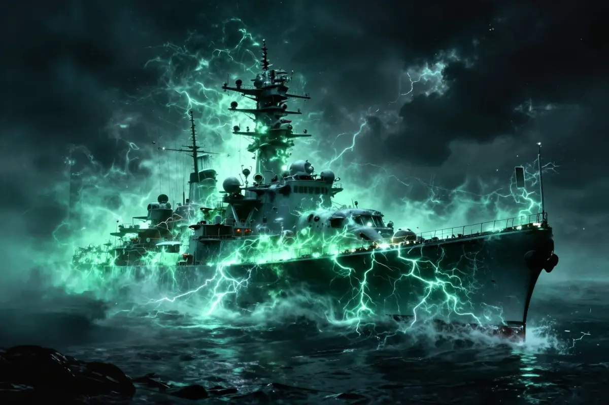

The Philadelphia Experiment: Did the Navy Make a Ship Invisible?

A letter for an astronomer
In January 1956, letters began to reach a man named Morris K. Jessup. He was an astronomer and an author. In 1955, he had published a book called The Case for the UFO. Now a stranger was writing to him about it.
The letters were signed Carl Allen or Carlos Miguel Allende. But they told an amazing tale about a ship, a secret test, and a Navy that had something to hide.
This tale has a name: the Philadelphia Experiment. Let us go back to where it all began. First, we need to hear the legend itself.
The ship that vanished
It is autumn in 1943, at the Philadelphia Naval Shipyard. A Navy ship, the destroyer escort USS Eldridge (DE-173), sits in the water. According to the legend, the date is on or around October 28.
The story says that the Navy switched on powerful generators aboard the ship. A strange green-blue glow wrapped around the hull. Then the ship vanished. It became invisible, not just to radar, but to the naked eye.
The legend goes on. The ship is said to have reappeared at the Norfolk Naval Shipyard in Virginia, about 200 miles away. Then it came back to Philadelphia.
The story also says that the test had a terrible cost. Some of the crew were said to be trapped inside the metal of the ship. Others went mad, faded in and out of reality, or burst into flames.
The legend says that the test used Albert Einstein’s unified field theory. It was meant to help Allied ships in the Battle of the Atlantic, the long fight against German U-boats, which were submarines. But official history says that the experiment never happened. So where did the story come from?
The man behind the letters
This story did not come from secret papers or from a whistleblower, a person who reports wrongdoing inside an organization. It began with a handwritten letter.
Allen said that he had seen the test himself. He was standing on the deck of the SS Andrew Furuseth, a merchant ship tied up in Philadelphia. He described the Eldridge wrapped in a glowing field. He said that it vanished, then reappeared in Norfolk, then came back to Philadelphia. His letters talked about Einstein’s theory, invisible force fields, and government cover-ups.
Nothing in the letters could be checked.
In 1980, a writer named Robert Goerman said that Allen was really Carl Meredith Allen of New Kensington, Pennsylvania. Goerman described him as a creative, lonely man. Years later, Allen himself said that he had written the notes in the margins of Jessup’s book to scare Jessup.
The letters felt convincing because they were so specific. He named a ship, a place, and a technology. He described what happened to the crew. So researchers did what we can all do with a story like this. They checked the ship.
What the ship’s log says
The USS Eldridge was a real ship. It was a Cannon-class destroyer escort. It was commissioned, or made ready for service, on August 27, 1943.
Its deck log and war diary tell us where it was. They show that the ship was never in Philadelphia between August and December 1943. In 1999, a reunion of Eldridge veterans said the same thing. The ship never made port in Philadelphia. Other former crew members said that they knew nothing about any experiment.
The log also tells us what the ship really did. From January 1944 to May 1945, it guarded convoys on nine voyages to the Mediterranean. In 1945, it went to the Pacific.
In 1946, the ship was put in reserve. In 1951 it was given to Greece and renamed the Leon. It left the Greek Navy in 1992 and was sold for scrap in 1999. The Navy says that its records show no strange experiment. On the dates in the legend, they place the ship somewhere other than Philadelphia.
So the facts were against Allen. Then something odd happened that made the story grow.
A book with blue ink
In late 1955, the Office of Naval Research received a package. The office is known as the ONR. Inside was a copy of Jessup’s book, with notes written in the margins in three shades of blue ink.
The notes seemed to come from several people. One used the name “Jemi.” The notes talked about secret government plans. Jessup saw this copy at the ONR in 1957.
A company called Varo Manufacturing later made copies of the marked-up book. In the end, there were 127. This is known as the “Varo Edition.” Believers still call the Navy’s copy their strongest piece of “evidence.” But the Navy says that the ONR never studied radar invisibility.
Remember what Allen said later. He wrote the notes to scare Jessup. A book full of mystery notes is a nice thing to find. But it is not proof that a ship ever vanished.
Real science, wrong story
The legend sounds believable partly because it uses real scientists. Albert Einstein was a real and famous scientist. Einstein also worked on a unified field theory. This was an attempt to join gravity and electromagnetism in a single set of equations. It is not a finished theory. There is no evidence that he ever worked on invisibility, teleportation, or anything like the Philadelphia Experiment.
The legend sometimes says that Nikola Tesla helped build the technology. This cannot be true. Tesla died on January 7, 1943, nearly ten months before the test was said to happen.
The physics does not match either. The legend says that strong electromagnetic fields bent light around the ship. Today, scientists have ideas for optical cloaking using metamaterials, which are human-made materials with very tiny designed structures. They must be built with great care at the nanoscale, which is far smaller than anything the eye can see. They look nothing like generators and cables.
Still, the Navy really did work on ships during the war. That may have given the legend its seed.
One example is degaussing. This means taking away the magnetism of a ship’s hull. A ship with less magnetism was safer from magnetic mines. Workers wrapped the hull in thick electric cables and ran currents through them. It does not change how a ship looks to the eye or to radar.
Some writers think that an outsider could have mistaken this work for an “invisibility” test. This is only a guess.
The Navy also tested ship camouflage in both World Wars. One kind was dazzle camouflage, with bold patterns meant to confuse enemy range-finders. Wartime secrecy at the shipyard, plus degaussing and camouflage, gave rumors a good place to grow. A man like Carl Allen could easily have let his imagination do the rest.
For years, only UFO fans talked about the story. Then it reached the cinema.
From a letter to a film
In August 1984, a film called The Philadelphia Experiment came out. It starred Michael Paré. He played a sailor who is thrown through time to 1984. The film changed the story a great deal. But it showed the legend to millions of people. A sequel came out in 1993, and the Syfy channel made a new version in 2012. Each one added new details. In the end, people could not tell the original claims from the made-up parts.
The story also brought in new claimants. In 1989, a man named Alfred Bielek said that he had been aboard the Eldridge during the test. He later said that the 1984 film matched what he had seen. Skeptics say that some people who made such claims were not veterans of the ships at all. No documents support the claims.
So what do we know now?
One letter, no ship
Let us go back to the start. In January 1956, an astronomer opened a strange letter. Almost everything that followed grew out of it.
By almost every measure of history and science, the Philadelphia Experiment is a myth. It began with one source, Carl Allen, and he later said that he had made up the notes. The ship’s log shows that it was not in Philadelphia on the date of the supposed experiment. The science in the legend does not fit known physics. The Navy has denied that the test happened. No document has ever shown otherwise.
So why does the story live on? Many people believe that governments hide amazing machines. Some think that a denial proves a cover-up. Some feel that the truth is always stranger than what we are told. But for this tale, there is no evidence. It all started with a letter.
References & Further Reading
Encyclopedia.com: Philadelphia Experiment — Jessup, the Allende letters, the Navy's 1976 reply
📚 Recommended Reading: The Philadelphia Experiment by Charles Berlitz (on Amazon) — As an Amazon Associate, we earn from qualifying purchases.
Editorial note: The Navy says the experiment never happened, and the ship's own records place it elsewhere. The story began with one man's letters, and he later said he made up the notes. See our Editorial Policy.